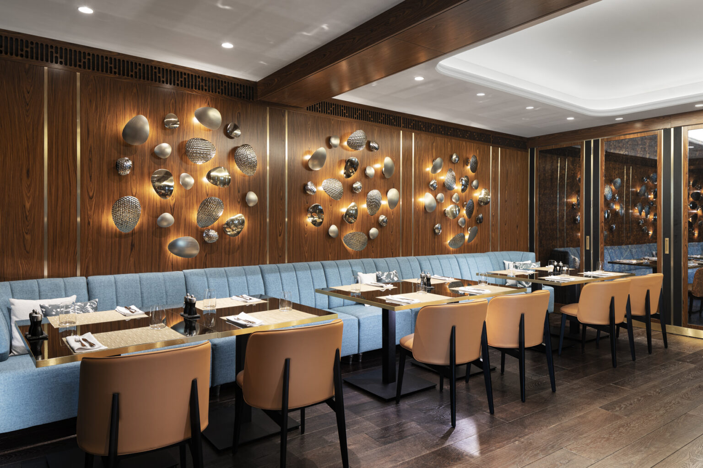
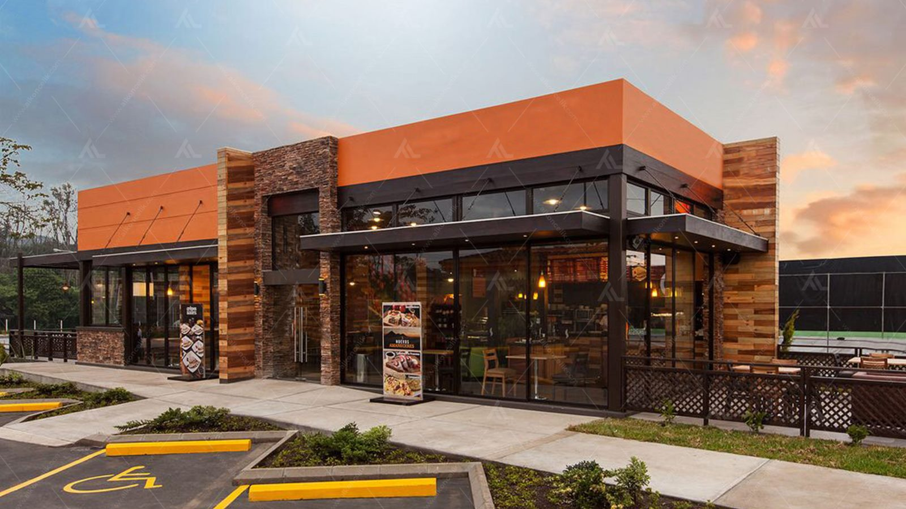

Our Story
Morning Bites opened its doors in 2018 with a simple dream: to make mornings brighter with fresh, delicious breakfasts. We believe that every great day starts with a great meal, and we source the finest local ingredients to craft dishes that are both nutritious and delightful.
Our chefs combine traditional recipes with modern twists, and our cozy atmosphere is designed to make you feel right at home. Whether you're grabbing a quick coffee or enjoying a lazy brunch with friends, Morning Bites is the place to be.
Explore Our Space & Dishes
From our sunny seating area to the art on every plate, see what makes Morning Bites special.




Our Vibe
Enjoy a sample of the music we play in the restaurant:
What Our Customers Say
"Best breakfast in town! The pancakes are fluffy and the coffee is perfect."
— Sarah Johnson
"Fresh ingredients and beautiful presentation. Highly recommended!"
— Michael Chen
"Cozy atmosphere, friendly staff, and super fast delivery."
— Emma Davis